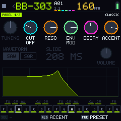
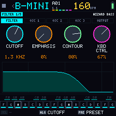
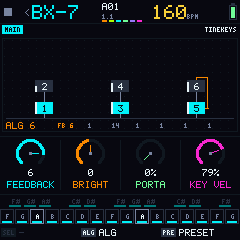
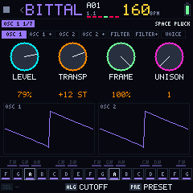
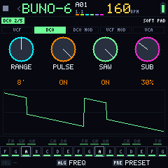
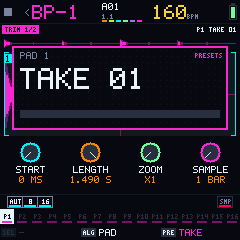

Free firmware for your M-VAVE FM-1
Turns the FM-1 into a hi-fi live groovebox: the goal is the best sound a small machine can give. Six machines (drums, a pad sampler, a bass, FM, a wavetable and a polysynth with chorus) computed live at 44.1 kHz and 24 bits, each with its own length and its own speed. Free code, licensed under the GPL-3.0.

A hi-fi machine that fits in your hand
Bubba Machine chases one thing: the best sound the FM-1's hardware can give, with no shortcut you can hear. Every version is measured on the device against that goal.
44.1 kHz, 24-bit, end to end
Every machine and the whole mix run at the codec's real rate, in floating point. Highs reach 20 kHz and tuning is exact.
Computed live, never low-res
Drums, basses and synths are synthesized note by note, not played back from 8-bit recordings. Nothing is cut to fit.
The real circuit, not a preset
Each machine has its own engine modeled on the one that inspired it (the BB-303 uses Open303's TB-303 filter and accent), pages laid out like its panel and historic sounds rebuilt from patch sheets.
All the hardware at work
With TWO CORES both 360 MHz cores share the voices, the kick cuts through the mix with a sidechain, and the board runs on its stock power rails so it stays on while you play.
Measured, not guessed
CPU, RAM and sound are checked on the FM-1 and in hours of simulated playing, and what is still missing is written down.
How it sounds and whyThe 240×240 screen, as it is
These are real firmware screenshots, generated by the automated tests. The screen is in English; other languages are optional packs.







Six machines to play live
Everything is designed around the FM-1 controls: three big knobs, four small ones, fourteen buttons and 27 keys with LEDs.
BR-8
Modeled drums (808, 909 and SYNTH), computed live. A step sequencer with accents, repeats, mutes and a length per instrument.
BP-1 Slicer
16 pads cut from your takes, as on a KO II or an OP-1 field. Slicing writes a sequence that plays like the loop; it can also record the mix.
BB-303 · B-MINI
The TB-303 with its panel, ACCENT and SLIDE per step and TB-03-style overdrive, or a Minimoog with its menus. Each channel picks its machine.
BX-7 · BITTAL · BUNO-6
The FM-1's 6-operator FM, a Vital-style wavetable and a Juno-6 with chorus, each with its own menus and effects. Up to two heavy ones at a time.
Mixer
Nine patterns, the six channels with volume, filter, delay and reverb, mutes, solo and four scenes per pattern.
Factory patterns
It starts with recreations of Da Funk, Confusion (from Blade) and Enjoy the Silence, and records like SLOOP: a fixed length that wraps around.
Everything around the firmware
Bubba Machine is more than a file to flash. This is what already exists and what is coming.
Web emulator
The full firmware in your browser, compiled to WebAssembly. Nothing to install.
Open the emulatorFM-1 firmware
Runs on the device since 0.4.0-beta and installs plug and play from the browser. Tested on a single FM-1; an update may erase what you saved.
InstallAudio quality
44.1 kHz end to end, a floating-point mix and sounds computed live. What improved, what it costs and what is missing.
The detailsInterface 3.0
Four gestures per button and HOME everywhere, the base of the 0.6 machines and their new face.
Why it works this wayControl platform
With the FM-1 connected: sampler takes, Vital presets, DX7 .syx banks, the screen language and memory, with warnings.
Open the controlYours to study, change and share
Bubba Machine is released under the GNU General Public License v3.0 or later.
- Original code, written from scratch. Only hardware facts from public FM-1 reverse engineering were used. Credits.
- Sounds computed live. The firmware ships no third-party recorded audio; the community presets in the bank are freely licensed and credited.
- Always with its source. Any version that is distributed, modified ones included, has to publish its code.
- Tested. Over 600 automated checks run on every change.